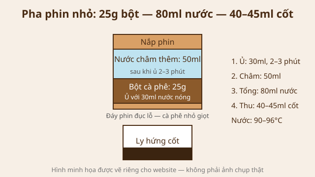

Pha cà phê phin: tỉ lệ 25g – 80ml và cách chỉnh cho đúng gu của bạn
Tác giả: Ruler
Pha cà phê phin là việc nhiều người Việt làm mỗi sáng, nhưng pha cho ra ly đậm, thơm và lặp lại được đúng vị hôm qua lại là chuyện khác. Phin không có nút bấm, không có đồng hồ đo áp suất. Người pha là người quyết định gần như mọi thứ: bột nhiều hay ít, nước nóng tới đâu, nén chặt hay nhẹ, chờ bao lâu. Vì vậy, thay vì học thuộc một công thức rồi pha y hệt mỗi ngày, bạn nên hiểu phin đang làm gì trong từng bước, rồi dùng một điểm bắt đầu ổn định để chỉnh dần theo miệng của mình.
Bài này lấy điểm bắt đầu quen thuộc là 25g bột cho 80ml nước, dùng cho phin nhỏ một người uống. Đây không phải tỉ lệ duy nhất đúng. Nhiều hướng dẫn khác dùng 80–100ml nước cho cùng 25g bột. Bài sẽ nói rõ vì sao có khoảng chênh đó, và làm thế nào để bạn tìm ra con số của riêng mình sau vài lần pha.
Phin gồm những gì và mỗi phần làm việc gì
Một chiếc phin thường có bốn phần: thân phin có đáy đục nhiều lỗ nhỏ, nắp gài để nén bột, nắp đậy để giữ nhiệt, và đĩa hứng đặt dưới đáy khi bạn muốn giữ phin nóng mà chưa đặt lên ly. Nước sôi rót vào thân phin sẽ thấm qua lớp bột, hòa tan các chất trong cà phê, rồi nhỏ giọt qua các lỗ ở đáy xuống ly. Tốc độ nhỏ giọt phụ thuộc vào độ mịn của bột, độ chặt của nắp gài, lượng bột và nhiệt độ nước.
Phin nhỏ là loại pha một ly. Phin lớn pha cho nhiều người cùng lúc, lượng bột và nước tăng theo, nhưng nguyên tắc thấm và nhỏ giọt thì giống nhau. Nếu bạn mới bắt đầu, hãy dùng phin nhỏ. Pha một ly giúp bạn nhận ra sự khác nhau giữa các lần pha rõ hơn là pha một ấm lớn rồi chia ra nhiều ly.
Chất liệu phin cũng ảnh hưởng tới cảm giác pha, nhưng không quyết định vị nhiều bằng bột và nước. Phin nhôm nhẹ và truyền nhiệt nhanh, phin inox giữ nhiệt ổn định hơn và dễ vệ sinh. Điều quan trọng hơn chất liệu là phin sạch, đáy không bị tắc, nắp gài đặt phẳng và vừa với thân phin. Một chiếc phin cũ nhưng sạch và khít thường cho ly ổn định hơn một chiếc phin mới mà nắp gài lỏng.
Ba con số khởi đầu: 25g, 80ml và nước gần sôi
Điểm bắt đầu trong bài này là 25g bột cà phê và tổng cộng 80ml nước. Nhiều hướng dẫn pha phin nhỏ dùng đúng hai con số này, chia thành khoảng 30ml nước ủ lúc đầu và 50ml nước châm thêm sau đó. Cũng có hướng dẫn dùng 80–100ml nước cho 25g bột, tức là châm thêm 60–80ml sau lần ủ đầu tiên. Khoảng chênh 20ml này không phải là lỗi của bên nào. Nó phản ánh hai lựa chọn khác nhau: 80ml cho ly cốt đậm hơn để pha sữa đá, còn 80–100ml cho ly loãng hơn một chút để uống đen hoặc uống nóng.

Hình minh họa tự vẽ — không phải ảnh chụp thật.
Nhiệt độ nước cũng có một khoảng tương tự. Các hướng dẫn thường nhắc nước ở khoảng 93–95 độ C, tức là nước vừa sôi rồi để nguội bớt một chút, hoặc nước sôi ở khoảng 90–96 độ C. Một hướng dẫn khác dùng nước 88–92 độ C cho phin, vì hạt rang đậm nên dùng nước mát hơn để bớt khét. Khoảng chênh này là bình thường: bạn nên bắt đầu ở khoảng 93 độ C, rồi thử hạ xuống nếu ly đắng gắt. Nước sôi già 100 độ C rót thẳng vào thường làm ly đắng gắt hơn, còn nước nguội quá thì bột chiết ra chậm và ly nhạt. Nếu bạn không có nhiệt kế, cách đơn giản là đun sôi nước rồi chờ khoảng nửa phút đến một phút trước khi rót. Ấm đun có nút chỉnh nhiệt thì đặt ở mức khoảng 93 độ C cho lần pha đầu tiên.
Thời gian cũng vậy. Nhiều hướng dẫn ghi tổng thời gian từ lúc rót nước đến lúc cà phê chảy hết là khoảng 5–7 phút, tính cả thời gian ủ. Có hướng dẫn ghi 4–6 phút cho phần chiết chính. Bạn không cần bấm giờ từng giây. Hãy dùng thời gian như một dấu hiệu để đọc phin: nếu cà phê chảy hết trong chưa tới 3 phút thì thường là bột quá thô hoặc nén quá nhẹ; nếu sau 7–8 phút mà phin vẫn còn nhỏ giọt chậm thì thường là bột quá mịn hoặc nén quá chặt.
Chuẩn bị trước khi rót nước
Chuẩn bị tốt giúp các lần pha giống nhau hơn. Trước hết là bột. Với phin, bột nên xay ở mức vừa, cảm giác khi chạm vào giống như đường cát mịn hoặc muối hạt nhỏ. Bột xay quá mịn sẽ làm nước đi qua chậm và dễ đắng; bột xay quá thô sẽ làm nước đi qua nhanh và ly nhạt. Nếu bạn mua bột xay sẵn, hãy hỏi người bán cỡ xay cho phin, và ghi lại tên loại bột cùng ngày mua để lần sau đối chiếu.
Tiếp theo là cân. Một chiếc cân bếp nhỏ giúp bạn lặp lại đúng 25g mỗi lần. Nếu chưa có cân, bạn có thể dùng muỗng canh để ước lượng, nhưng cần nhớ rằng mỗi loại bột nặng khác nhau và mỗi muỗng múc đầy hay vơi cũng khác nhau. Vì vậy, muỗng chỉ nên dùng tạm trong vài lần đầu. Khi bạn đã muốn pha ổn định, cân là dụng cụ đáng mua nhất, trước cả ấm rót hay phin đắt tiền.
Cuối cùng là tráng phin và ly bằng nước nóng. Bước này làm hai việc: làm sạch phin và làm nóng đều phin cùng ly, để nước pha không bị nguội đi khi chạm vào kim loại lạnh. Bạn chỉ cần rót một ít nước sôi qua phin, lắc nhẹ rồi đổ đi. Ly cũng tráng qua nước nóng rồi đổ đi trước khi đặt phin lên.
Các bước pha, viết theo trình tự người pha thật làm
Cho 25g bột vào phin, lắc nhẹ để mặt bột phẳng. Đặt nắp gài lên và ấn nhẹ, vừa đủ để mặt bột phẳng và không bị xô lệch khi rót nước. Nắp gài không phải là dụng cụ ép bột thành bánh cứng. Nếu bạn ấn quá mạnh, nước sẽ khó đi qua, cà phê chảy chậm và đắng. Nếu bạn không ấn gì cả, nước có thể chảy theo một đường rãnh và bỏ qua phần bột còn lại.
Rót khoảng 30ml nước nóng, rót chậm theo vòng tròn để nước thấm đều khắp mặt bột. Đây là bước ủ. Bột cà phê mới rang sẽ nở lên và thoát khí trong lúc này. Bạn chờ khoảng 2–3 phút cho bột nở đều. Một số hướng dẫn ủ 2 phút, một số hướng dẫn ủ khoảng 3 phút. Với bột mới, bạn sẽ thấy bột phồng lên rõ hơn; với bột để lâu, bột nở ít hơn, nhưng bước ủ vẫn giúp nước thấm đều trước khi châm thêm.
Sau khi ủ, châm thêm khoảng 50ml nước nóng, đậy nắp phin lại và chờ cà phê nhỏ giọt. Tổng lượng nước lúc này là 80ml. Nếu bạn muốn ly loãng hơn theo kiểu 80–100ml, bạn có thể châm thêm 60–80ml ở bước này thay vì 50ml, nhưng hãy giữ nguyên một mức trong vài lần đầu để biết rõ mình đang thay đổi điều gì. Trong lúc chờ, bạn không cần ấn nắp gài thêm. Hãy để nước tự đi qua bột.
Khi cà phê đã chảy gần hết, bạn có thể nén nắp gài thêm một lần nhẹ nhàng để lấy phần nước còn lại trong bột, rồi nhấc phin ra. Lượng cốt thu được thường khoảng 40–45ml với công thức 25g và 80ml nước, theo các hướng dẫn dùng đúng hai con số này. Con số này sẽ thay đổi theo loại hạt, độ xay, chiếc phin và lượng nước bột giữ lại, nên bạn nên cân hoặc đo thử một lần để biết phin của mình cho ra bao nhiêu, thay vì coi 40–45ml là kết quả bắt buộc.
Khi ly không ngon, hãy đọc dấu hiệu thay vì đổi hết mọi thứ
Bảng dưới đây do chúng tôi tự tổng hợp từ các dấu hiệu chung mà nhiều hướng dẫn cùng nhắc tới. Mỗi dòng chỉ thay đổi một yếu tố trong lần pha tiếp theo, để bạn biết rõ thay đổi nào đã làm ly ngon hơn.
| Dấu hiệu bạn nếm được | Nguyên nhân có thể | Chỉnh một thứ ở lần sau |
|---|---|---|
| Cà phê chảy hết quá nhanh, ly nhạt và chua gắt | Bột quá thô, hoặc nắp gài quá nhẹ, hoặc nước quá nguội | Xay mịn hơn một nấc, hoặc ấn nắp gài chắc hơn một chút |
| Cà phê chảy rất chậm, ly đắng gắt và khô miệng | Bột quá mịn, hoặc nắp gài quá chặt, hoặc nước quá nóng | Xay thô hơn một nấc, hoặc ấn nắp gài nhẹ hơn |
| Ly đắng nhiều nhưng thiếu thơm | Nước sôi già rót thẳng, hoặc bột để lâu đã mất hương | Để nước nguội bớt về khoảng 93 độ C; dùng bột mới hơn |
| Ly nhạt dù đã chờ đủ lâu | Ít bột so với nước, hoặc bột xay quá thô | Tăng bột lên 27–28g mà giữ nguyên lượng nước, rồi nếm lại |
| Ly đậm nhưng uống xong thấy nặng và khó chịu | Tỉ lệ nước quá ít so với gu của bạn | Tăng nước lên 90–100ml cho cùng 25g bột, giữ nguyên các bước khác |
| Vị lúc ngon lúc dở dù làm giống nhau | Không cân bột, múc bằng muỗng lúc đầy lúc vơi | Dùng cân cho cả bột và nước trong một tuần |
Một lỗi phổ biến là đổi nhiều thứ cùng lúc: vừa đổi bột, vừa đổi nước, vừa đổi độ xay. Khi ly ngon hơn, bạn không biết nhờ thay đổi nào; khi ly dở hơn, bạn cũng không biết nên quay lại chỗ nào. Vì vậy, hãy giữ nguyên mọi thứ và chỉ đổi một yếu tố trong mỗi lần pha. Ghi lại thay đổi đó vào một cuốn sổ nhỏ hoặc ghi chú điện thoại.
Mẫu nhật ký pha 7 ngày để tìm ra công thức của bạn
Mẫu dưới đây là phần tự làm của bài này. Bạn không cần điền hết mọi ô. Chỉ cần ghi đủ để tuần sau bạn pha lại được ly mình thích nhất.
| Ngày | Bột (g) | Nước (ml) | Nhiệt độ ước lượng | Thời gian chảy | Vị ghi lại | Lần sau đổi gì |
|---|---|---|---|---|---|---|
| Ngày 1 | 25 | 80 | Nước vừa sôi, chờ nửa phút | |||
| Ngày 2 | 25 | 80 | Giữ nguyên | |||
| Ngày 3 | 25 | 90 | Giữ nguyên | |||
| Ngày 4 | ||||||
| Ngày 5 | ||||||
| Ngày 6 | ||||||
| Ngày 7 |
Sau 7 ngày, bạn sẽ có ít nhất một dòng ghi lại ly mình thích nhất, với đầy đủ bột, nước và thời gian. Đó mới là công thức chuẩn vị của bạn, chứ không phải một con số chung trên mạng. Nếu bạn đổi sang loại bột khác, hãy bắt đầu lại từ 25g và 80ml, vì mỗi loại bột hút nước và chiết ra vị khác nhau.
Kết luận
Pha cà phê phin ngon và lặp lại được không bắt đầu từ việc học thuộc một công thức, mà bắt đầu từ việc pha giống nhau trong vài lần liên tiếp. Hãy bắt đầu với 25g bột, 80ml nước, nước ở khoảng 93–95 độ C, ủ khoảng 2–3 phút rồi châm thêm và chờ khoảng 5–7 phút cho cà phê chảy hết. Nếm, ghi lại, và chỉ đổi một thứ ở lần sau. Sau một tuần, bạn sẽ không còn cần tra công thức nữa, vì bạn đã có công thức của riêng mình, viết bằng chính những lần pha của bạn.
Nguồn tham khảo
- VinID, "Cách pha cà phê phin thơm ngon, vị đậm đà khó cưỡng" — phin nhỏ dùng khoảng 25g cà phê bột và 80–100ml nước, nước sôi khoảng 93–95 độ C, ủ khoảng 2 phút rồi châm thêm 60–80ml, tổng thời gian khoảng 5–7 phút; tỉ lệ thường là 1:4 hoặc 1:5 (truy cập 23/11/2026): https://vinid.net/blog/cach-pha-ca-phe-phin/
- Vinpearl, "How to make Vietnamese coffee: Enjoy a tasty drink" — cho 25g bột vào phin, rót 20ml nước nóng để ủ 2 phút, châm thêm 60–80ml nước nóng, tỉ lệ thường khoảng 1:4, tức 80–100ml nước cho 25g cà phê (truy cập 23/11/2026): https://vinpearl.com/en/how-to-make-vietnamese-coffee-enjoy-a-tasty-drink-at-home
- Message Coffee, "Cách pha cà phê phin, video hướng dẫn và bí kíp pha cà phê phin ngon" — phin nhỏ dùng 25g cà phê và 80ml nước sôi 90–96 độ C, ủ với 30ml nước trong 2–3 phút rồi châm thêm 50ml, thu được khoảng 40–45ml cốt cà phê; tỉ lệ 1:3,2 này đậm hơn mức phổ biến 1:4–1:5 (truy cập 23/11/2026): https://messagecoffee.com/blogs/cong-thuc-pha-che/cach-pha-ca-phe-phin-video-huong-dan-va-bi-kip-pha-ca-phe-phin-ngon